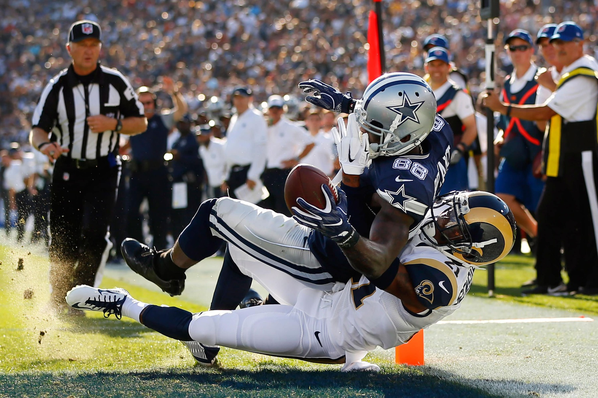
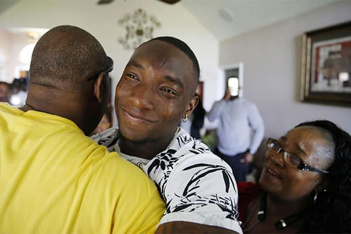

Cowboys Gameday: Week 1
Giants at Cowboys
3:25 p.m. Sunday TV: Ch. 4
Radio: KRLD-FM (105.3), KMVK-FM (107.5, Spanish)
Line: Dallas by 1
A win would mean ...
Dakmania is on a new plane. The rookie quarterback’s preseason play muted the-sky-is-falling devastation when Tony Romo broke a bone in his back. Beating the Giants reaffirms the belief placed in Dak Prescott (above). The first-round selection of running back Ezekiel Elliott is probably going according to plan if the Cowboys improve to 9-0 against the Giants on opening day.
A loss would mean ...
Pour torrents of ice cold water on the populations banking on a rookie quarterback picked in the fourth round to save the season, depending on the margin and performance. Or Prescott’s play could be encouraging but show that it continues to be hard to overcome the loss of Romo. Falling to an NFC East rival that threw money at fixing its defense could sting a franchise that did not.
Advertisement
SportsDay’s Picks
Dallas Cowboys wide receiver Dez Bryant scores a touchdown against the Los Angeles Rams and defensive back Coty Sensabaugh on Aug. 13, 2016. (Tom Fox/Staff Photographer)

Brandon George: Dez Bryant can’t wait to get back on the field Sunday against the Giants. He’s healthy and as confident as ever. The Pro Bowl receiver appears to be primed for a great season. After a slow start in training camp, he’s been catching everything thrown his way over the last few weeks. Bryant will be the difference against the Giants. The Cowboys will try to control the clock with the running game and their talented offensive line, but Bryant will be the player who scores the most in what should be a high-scoring game. Bryant gives the Cowboys the lead early and tacks on another touchdown late, as Dallas does enough to escape with a narrow victory. Cowboys, 34-31

Kate Hairopoulos: The Cowboys’ cornerbacks have all had their problems. Is Brandon Carr worth that big contract? Is Orlando Scandrick fully back from his knee injury that forced him to miss 2015? Will Morris Claiborne ever be worth the sixth overall draft pick? Now they enter 2016 as the apparent strength of a suspect defense. They can solidify that claim against the Giants’ dangerous receiving unit. The secondary’s challenge is slowing the Giants’ Odell Beckham Jr. — who played with Claiborne at LSU — along with Victor Cruz and Sterling Shepard. Making it all the more difficult, they must overcome a lack of pass rush up front against Giants quarterback Eli Manning. Cowboys, 31-27

Jon Machota: On paper, it seems easy to figure out. The Giants have the better defense and the better quarterback. The Cowboys are starting a rookie running back and a rookie quarterback. How could anyone pick against New York? Well, funny things happen in the parity-driven NFL. The Giants will do everything in their power to shut down Ezekiel Elliott. It will work early, forcing Dak Prescott to throw. But he’ll make some plays with both his arm and his feet, giving the Cowboys a small second-half lead. Elliott will finish things off from there, breaking off a couple big runs, grinding the clock and totaling 130 yards in his rookie debut. Cowboys, 24-21

David Moore: Dak Prescott won’t arrive at AT&T Stadium in a helicopter. But owner Jerry Jones may give the rookie quarterback a lift home in his if Prescott manages to win this game. No one is breaking out the anointing oil here. It’s unrealistic to expect Prescott to produce the sort of superlative performance he did throughout the preseason. But he’s not your typical fourth-round pick. He won’t have to go out and win the game on his own. The key is that he doesn’t go out and lose it. Win, and he joins Roger Staubach as the only other rookie quarterback in franchise history to win on opening day. Cowboys, 28-27

Tim Cowlishaw: Cowboys riding rookies on offense but get considerable boost from their most reliable player — Dan Bailey. Cowboys, 26-24

Rick Gosselin: The Giants have a pass rush, the Cowboys do not. The Giants also have a quarterback who has won two Super Bowls. Giants, 31-20

Barry Horn: Welcome to the NFL regular season Mr. Prescott. It’s not a game where rookie quarterbacks making their first starts thrive. Giants, 30-17

Kevin Sherrington: Giants welcome Dak to the real NFL. First step in a long, painful process. Giants, 21-17
You make the call
We want to know who you who think will win this week’s Cowboys game. Enter your score below, and see which team other readers think will take home the “W.” Scores plotted on the lower-right of the chart indicate a predicted Cowboys victory, upper-left indicate a predicted opponent victory. (Note: Only scores below 60 will be shown.)
Who do you think will win? Enter the scores for each team, then click the "submit" button.
Thank you for your submission
You picked the to win, . Share your prediction on social media:
of readers are picking the to win this week by an average of points.
Cowboys:
:
Times predicted:
Advertisement
Bob Sturm’s scouting report
SituationEdgeIn the know
When the Cowboys run the ball
Edge
Finally, the unveiling of the combination of Ezekiel Elliott running behind the Cowboys offensive line that most expect should be dominant. The Giants have enlisted two massive defensive tackles in Johnathan Hankins (320 pounds) and free-agent acquisition Damon “Snacks” Harrison (350 pounds) to try to put up a roadblock.
When the Cowboys pass the ball
EdgeDak Prescott will have all eyes in his direction as a No. 135 draft pick starting in Week 1. The Cowboys have aerial weapons, but the Giants have pass rush ends and ball-hawking corners to try to find that game-breaking mistake.
When the Giants run the ball
Edge
The Giants have issues up front to match the Dallas weakness up front in pass rush. But, with Terrell McClain (injury) and Cedric Thornton (free agency) added inside, the Cowboys are expected to be solid against RB Rashad Jennings.
When the Giants pass the ball
Edge
Eli Manning gets the ball out quick and finally has his weapons available. The Cowboys have had a tough time getting to him in recent years, and with time and Beckham downfield, the Cowboys must demonstrate that they have fixed their secondary.
Special teams
Edge
The Cowboys return their entire special teams group with Dan Bailey, Chris Jones, and Lucky Whitehead. The Giants add a new kicker in Randy Bullock but also retain former Cowboys return specialist Dwayne Harris, who won the last meeting with a massive kick return for a touchdown.
Intangibles
Edge
It’s difficult to identify an edge for intangibles for a Week 1 meeting when both teams have so much to unveil. The Giants have a new coach and new signings everywhere on defense. The Cowboys have a rookie QB/RB combo who are full of confidence. Edge to the home team.
Bob Sturm’s Spotlight
Sunday will be the first NFL game for Oklahoma City native and former Sooners star receiver Sterling Shepard, in the first of what should be many meetings with the Cowboys. Shepard, the Giants’ second-round pick in April, gives Eli Manning another weapon in Giants coach Ben McAdoo’s offensive system.
The Giants should be able to flood the underneath zones in a way they seldom have been able to accomplish with Shepard joining Odell Beckham Jr. and Victor Cruz when the Giants play in their standard 11 personnel (1 RB, 1 TE, 3 WR).
No team in the league stays in this grouping more than New York (81 percent of snaps) and adding Shepard to the pairing of Cruz and Beckham (the two have played only one game together because of Cruz’s health) is enough to excite the franchise that has had little luck keeping their players off the injury reports in the last several years.
Shepard is quick out of breaks, dangerous after the catch and able to excel at going vertical, a talent that is rare among slot receivers who live underneath the linebackers in coverage. The only question for the Giants is whether they have gone too small at receiver as Cruz is the tallest of the trio at barely 6-0.
Sturm’s prediction: Cowboys 27, Giants 21. It is always a one-possession game between these two, but Dallas is able to pull out the opener behind Elliott’s debut.
Kathy Willens/The Associated Press
Advertisement
Top photo: Ashley Landis/Staff Photographer
Read more from The Dallas Morning News

Trappings of legend
While Jerry Jones doesn’t live in the past, an exclusive look inside the Cowboys owner’s office is a journey through the franchise’s history.
Answering the call
There are only so many things Derrick Kindred can do while hoping for a phone call from the NFL that will change his life.

Ringing endorsement
For 12 seasons with the Dallas Cowboys, Darren Woodson would routinely wreak havoc on Sundays, then onnect with his best friend on Tuesdays.